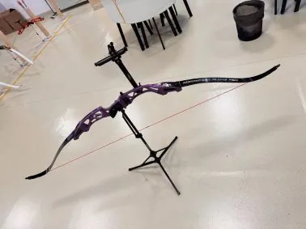
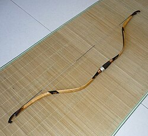
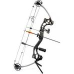
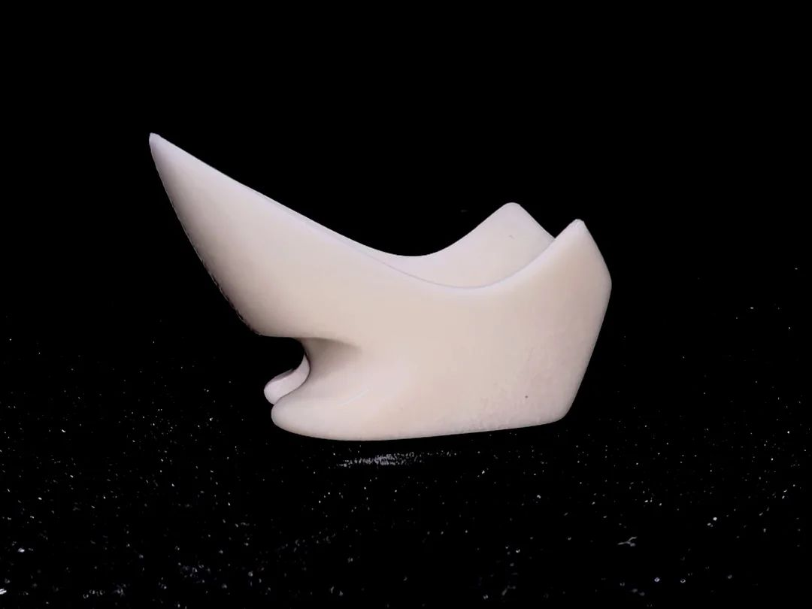

欢迎来到射箭器具介绍页面
| 弓 | 箭 | 箭靶 | 护具 |
|---|
器具介绍
射箭器具是射箭运动的重要基础，不同器具在训练、比赛和安全保障中承担着不同作用。
弓弓是射箭运动中最核心的器具，常见种类有竞技反曲弓、美式猎弓、传统弓和复合弓。不同类型的弓在结构、使用方式和适用场景上各有特点。 竞技反曲弓竞技反曲弓是现代奥运会和国际正式比赛中最常见的弓种，结构规范，稳定性较好。它的弓臂末端向外反曲，这种设计能够在拉弓时储存更多能量，从而提高射箭的速度和精度。竞技反曲弓通常会配备瞄准器、平衡杆等附件，适合用于专业训练和比赛。  美式猎弓美式猎弓主要用于狩猎和野外射箭活动，强调力量、便携性和实用性。这类弓通常结构较紧凑，便于在复杂环境中操作，具有较强的穿透力和较好的射程表现。随着射箭运动的发展，美式猎弓也逐渐被部分爱好者用于休闲体验和专项训练。 传统弓传统弓是历史最悠久的一类弓，具有鲜明的文化特色和传统工艺特点。它通常不依赖现代瞄准装置，更强调射手对动作、力量和手感的控制。传统弓不仅是一种射箭器具，也承载着不同地区的历史文化内涵，在中国传统射艺、日本弓道等项目中都具有重要地位。  复合弓复合弓是在现代材料和机械结构基础上发展起来的一种弓，最显著的特点是装有滑轮系统。滑轮结构能够减轻射手在拉满弓时所需维持的力量，使瞄准过程更加稳定。复合弓具有较高的精度、较强的威力和较好的射程，因此广泛应用于训练、比赛及部分狩猎活动中。  箭箭通常由箭杆、箭头、箭羽和箭尾组成。箭的材质和长度会根据训练要求和比赛项目有所不同，在现代箭杆根据材料可分为木质箭、碳纤维箭等，合适的箭有助于提高射击的稳定性和准确性。 箭靶箭靶通常由多个不同颜色的同心圆环组成，每个圆环对应不同的分数。射手命中越靠近中心的位置，所得分数越高。 护具护具主要包括护臂、护胸和指套等，用于减少射箭过程中弓弦回弹或摩擦带来的伤害，保证训练和比赛安全。根据弓种不同，护具的设计和使用方法也有所差异，传统弓一般使用扳指，每个朝代的扳指形制也有所不同，而现代竞技弓和复合弓则多使用指套或机械释放器。  |